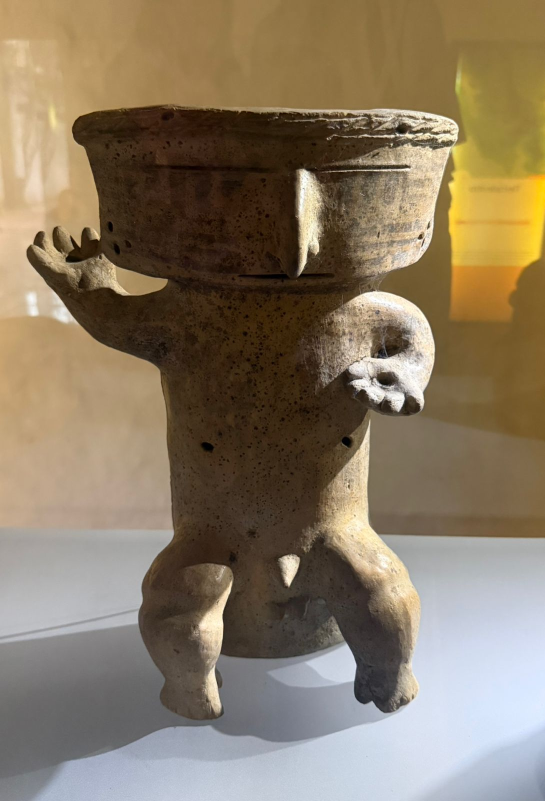

Proyecto de investigación sonora
Exploración de los sonidos de aves de Colombia para reconstruir
una memoria sonora inspirada en la cosmovisión Quimbaya.
Uno de los pueblos precolombinos más sofisticados del occidente colombiano, cuya cosmovisión entrelazaba naturaleza, sonido y espiritualidad.
Los Quimbaya habitaron el territorio del Eje Cafetero colombiano entre los siglos I y XVI d.C., en los actuales departamentos de Quindío, Risaralda y Caldas. Su sociedad era compleja, organizada en cacicazgos, con un profundo conocimiento del entorno natural andino.
Su territorio abarcó el corredor montañoso entre las cordilleras Central y Occidental, regado por los ríos Cauca y La Vieja. Estos paisajes de selva andina, páramos y valles fértiles nutrieron directamente su cosmovisión y su relación con la fauna local.
Para los Quimbaya, la naturaleza no era un entorno externo sino el cuerpo mismo de lo sagrado. Las aves ocupaban un lugar central: eran mensajeras entre el mundo de los vivos y el de los ancestros, y sus cantos marcaban ciclos agrícolas, rituales y calendarios ceremoniales.
Los Quimbaya son reconocidos mundialmente por su maestría en el trabajo del oro tumbaga, aleación de oro y cobre. Su cerámica era igualmente sofisticada: figuras antropomorfas y zoomorfas de gran expresividad que representaban deidades, chamanes y animales sagrados.
Su universo era tripartito: el mundo de arriba (cielo, aves, espíritus), el mundo del medio (los vivos, la tierra) y el mundo de abajo (los ancestros, el agua subterránea). Los animales —especialmente las aves— eran vehículos de tránsito entre estos planos de existencia.

Esta figura cerámica antropomorfa representa uno de los arquetipos recurrentes en la producción alfarera Quimbaya: una entidad que sostiene o porta un cuenco elevado, gesto asociado a la ofrenda y el intercambio ritual con las fuerzas sobrenaturales. La postura dinámica de sus extremidades y la expresión de su rostro sugieren un estado de trance o intermediación chamánica.
En la cosmovisión Quimbaya, estas representaciones funcionaban como recipientes simbólicos: contenedores no solo de sustancias rituales —chicha, tabaco, semillas— sino de energía espiritual. Su fabricación involucraba conocimientos precisos sobre arcillas locales, temperaturas de cocción y significados formales transmitidos entre generaciones.
Cada marcador registra el avistamiento y grabación de un ave colombiana con significado ecológico y cultural. Haz clic para escuchar y explorar.
—
Haz clic en cualquier marcador del mapa para conocer el ave registrada en ese territorio.
Los sonidos de las aves fueron utilizados como materia prima para construir una interpretación sonora inspirada en la memoria ancestral Quimbaya. Cada frecuencia, cada ritmo, cada timbre evoca el paisaje sonoro de los Andes colombianos tal como pudo haberlo experimentado un habitante de estos territorios hace mil años.
La composición integra grabaciones de campo, transformaciones espectrales y superposiciones que reconstituyen un espacio acústico perdido.